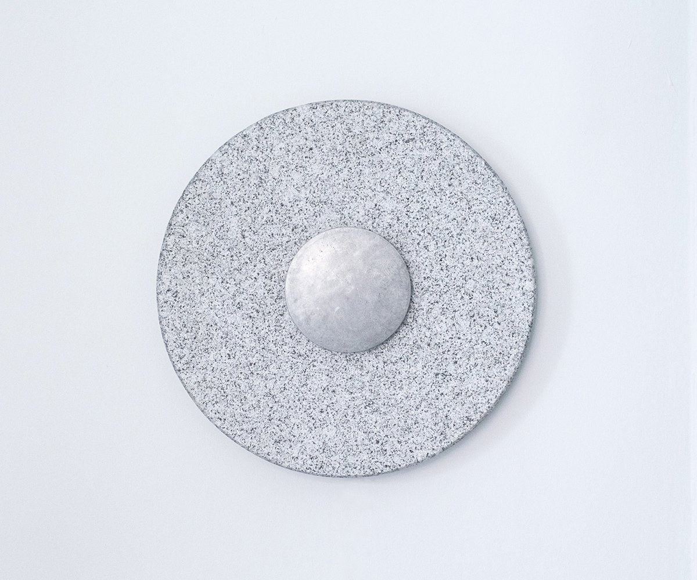
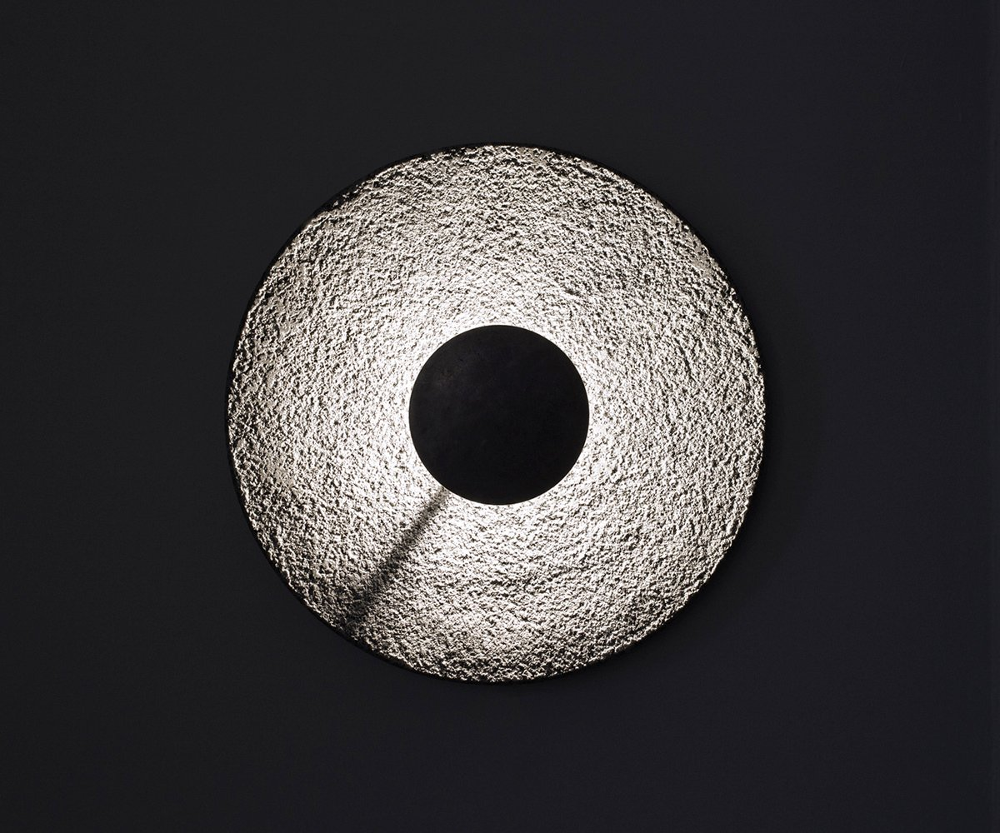
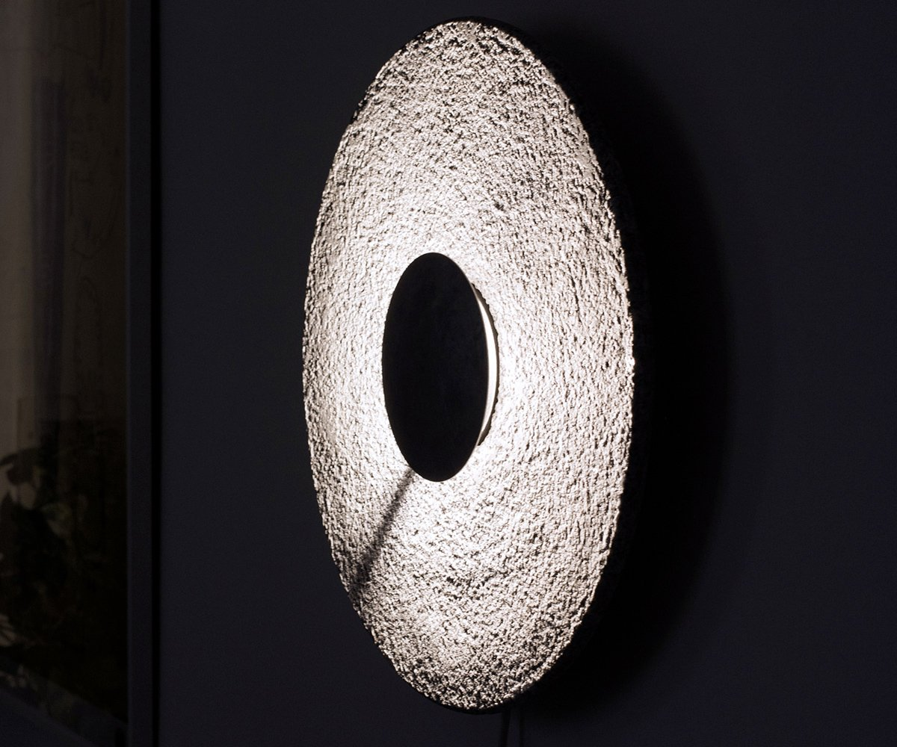
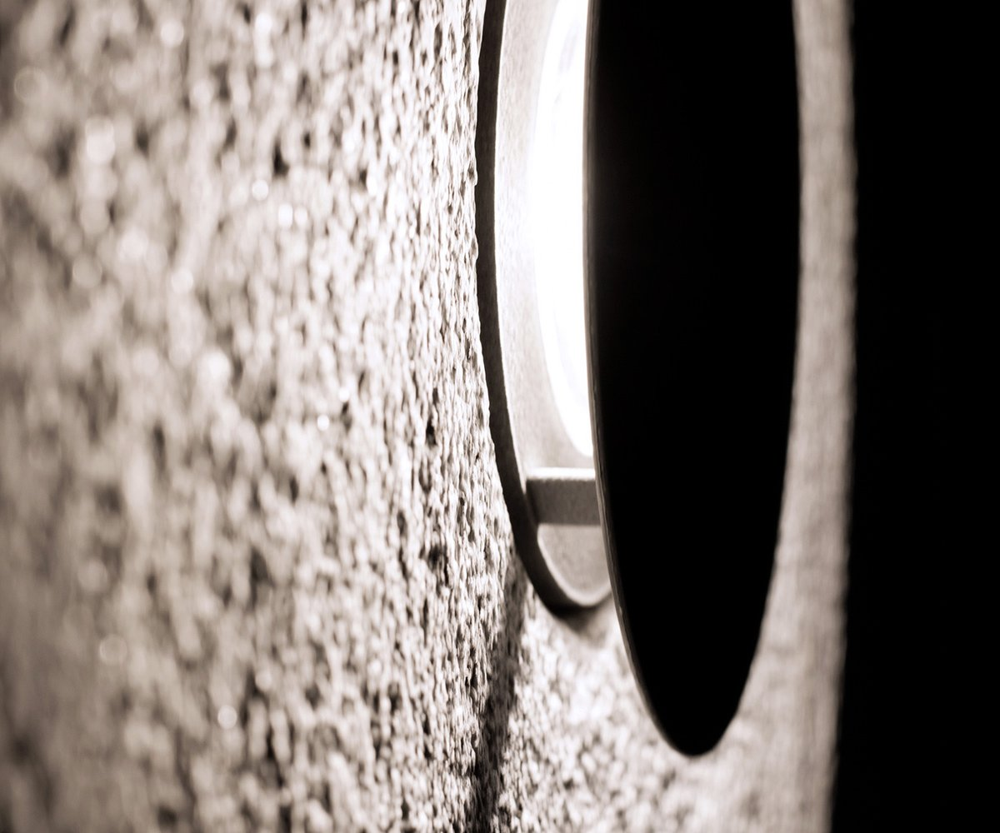
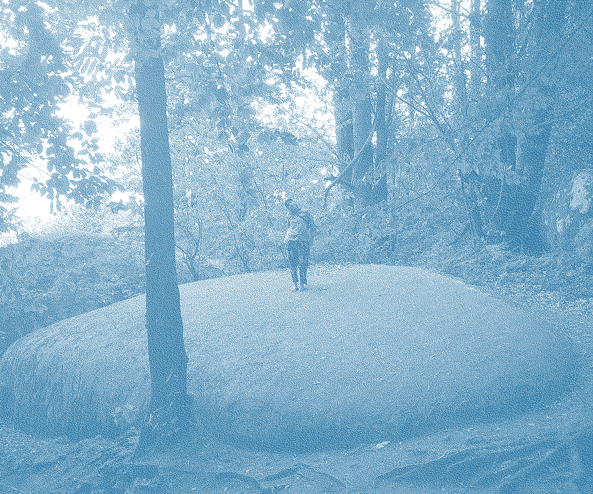
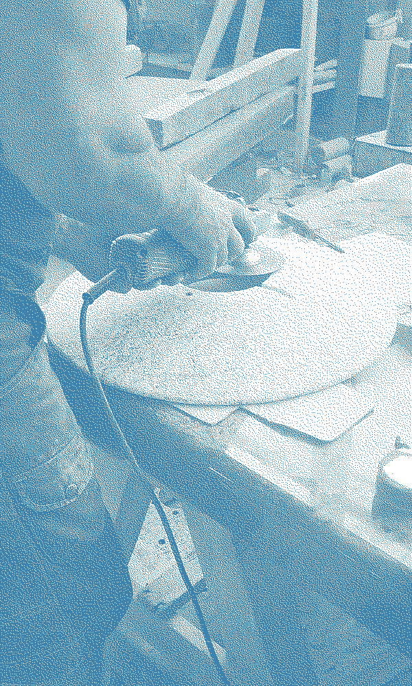
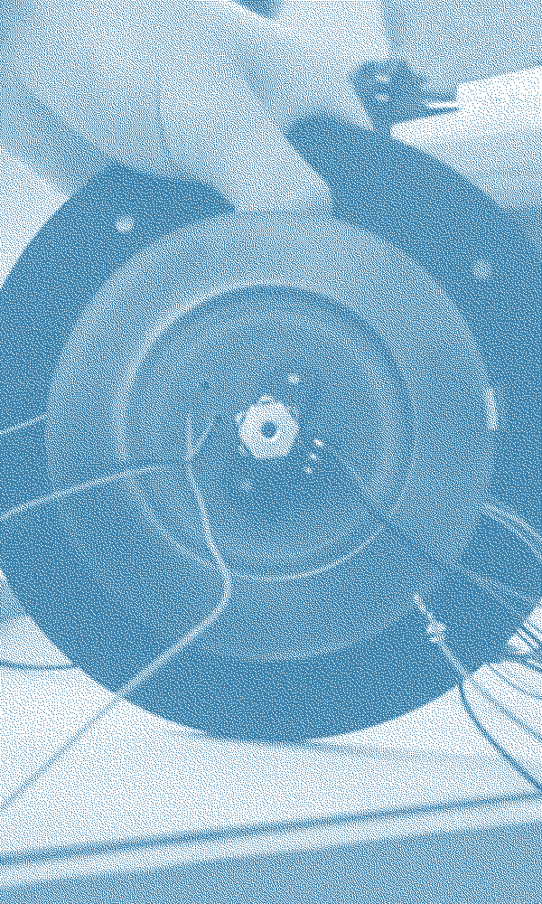

CADRAN







Cadran est une horloge lumineuse. Inspiré du cadran solaire, il questionne notre rapport au temps et sa perception. La lumière du soleil est remplacée par une lumière artificielle laquelle, grâce à une fine tige, génère une ombre projetée qui évolue subtilement selon l'heure de la journée. Le support en granit bouchardé accroche une lumière rasante qui détache les détails de la pierre et la brillance des quartz. Le temps passe mais l'angoisse d'être à la minute près n'existe pas.